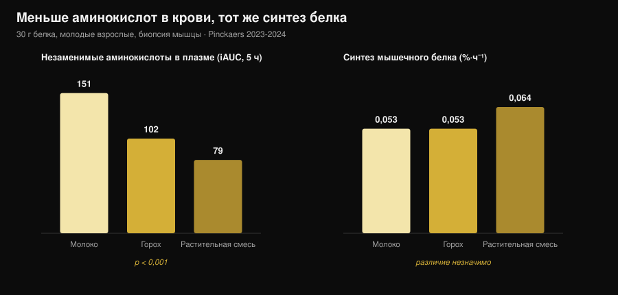
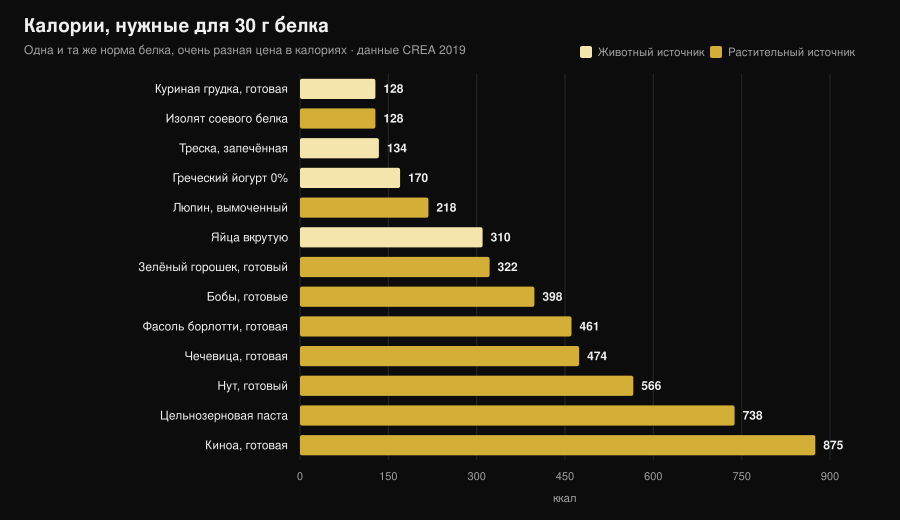

Растительный или животный белок для мышц?
«Растительный белок неполноценный, мышцы от него не растут». Одна из самых частых фраз в зале, и механизм за ней выглядит убедительно: меньше лейцина — меньше синтеза белка. Потом это взяли и измерили, с биопсией мышцы, и результат оказался не тем, которого ждёшь. Но есть вторая цифра, которую почти никто не называет, и именно она делает выбор практическим.

Коротко
- Пять исследований с биопсией мышцы — пять ничьих. Тридцать граммов белка из гороха, пшеницы, кукурузы, картофеля или растительной смеси дают такой же синтез мышечного белка, как 30 г молочного белка (группа Маастрихта, 2021-2024).
- Механизм «нужно больше лейцина» не выдерживает проверки. С растительной смесью незаменимых аминокислот в крови почти вдвое меньше (iAUC 79 против 151), а синтез одинаковый.
- В долгую — то же самое. Четыре исследования длительностью 10-16 недель на веганах, вегетарианках и растительных смесях не находят различий ни в массе, ни в толщине мышцы, ни в силе.
- Крупнейший метаанализ всё же видит небольшое преимущество животного белка (SMD −0,20 по мышечной массе), но оно исходит из несоевых растительных источников и полностью растительных рационов, а не из сравнения «соя против молока».
- Настоящая цена — калории. На 30 г белка нужно 99 г готовой куриной грудки и 128 ккал либо 435 г варёной чечевицы и 474 ккал (таблицы CREA). Почти в четыре раза больше.
Откуда берётся сомнение
Белок — не однородный блок, а цепочка аминокислот, девять из которых организм не умеет делать сам (незаменимые). Одна из них, лейцин, работает как выключатель: выше определённой концентрации в крови она запускает механизм синтеза мышечного белка.
В растительных источниках в среднем меньше лейцина и меньше незаменимых аминокислот на грамм, чем в мясе, яйцах, рыбе и молочных продуктах, и часть из них переваривается чуть хуже. Отсюда логичный вывод: меньше лейцина → меньше синтеза → меньше мышц.
Рассуждение верное. Беда в том, что верное рассуждение — это ещё не результат: его нужно измерить.
Эксперимент, который действительно измеряет
С 2021 по 2024 год группа Люка ван Луна в Маастрихтском университете опубликовала пять рандомизированных двойных слепых исследований с одинаковым дизайном: молодые взрослые, инфузия меченого фенилаланина, повторные биопсии мышцы в течение 5 часов, 30 г растительного белка против 30 г молочного.
| Растительный белок | Синтез, растительный | Молоко | Итог |
|---|---|---|---|
| Пшеница (Pinckaers 2021) | 0,056 %·ч⁻¹ | 0,053 %·ч⁻¹ | p = 0,56 |
| Картофель (Pinckaers 2022) | 0,053 %·ч⁻¹ | 0,050 %·ч⁻¹ | p = 0,54 |
| Смесь пшеница+кукуруза+горох (Pinckaers 2023) | 0,064 %·ч⁻¹ | 0,053 %·ч⁻¹ | p = 0,08 |
| Горох (Pinckaers 2024) | 0,053 %·ч⁻¹ | 0,053 %·ч⁻¹ | p = 0,96 |
| Кукуруза (Pinckaers 2024) | 0,053 %·ч⁻¹ | 0,053 %·ч⁻¹ | p = 0,90 |
Пять разных растительных источников — пять ничьих. А в исследовании с картофелем измерение провели ещё и после силовой тренировки: 0,069 против 0,064 %·ч⁻¹ в пользу картофеля, p = 0,52. Даже в том состоянии, которое интересует тренирующихся, разницы нет.

График показывает то, что разрушает механизм. Незаменимых аминокислот, поступающих в кровь за 5 часов после приёма (iAUC), 151 ммоль·300 мин·л⁻¹ с молоком, 102 с горохом и 79 с растительной смесью: разрыв огромный и статистически очень надёжный (p < 0,001 в обоих сравнениях). Синтез при этом не меняется.
Проще говоря: при 30 граммах белка порог уже пройден во всех вариантах. «Пик лейцина» важен при малой дозе; на реальной порции он перестаёт решать.
А что за месяцы?
Синтез, измеренный за 5 часов, — это подсказка, а не результат. Мышца видна за месяцы. Здесь есть четыре исследования, и читать их надо вместе.
Веганы против всеядных, 12 недель (Hevia-Larraín 2021, Sports Medicine). Девятнадцать постоянных веганов и 19 всеядных, белок доведён до 1,6 г на кг в сутки соей с одной стороны и сывороткой с другой, две тренировки в неделю под присмотром. Сухая масса ноги +1,2 кг в обеих группах; площадь сечения прямой мышцы бедра +1,0 против +0,9 см²; 1ПМ в жиме ногами +97 против +117 кг. Значимых различий нет.
Веганский рацион с высоким белком, 10 недель (Monteyne 2023, Journal of Nutrition). Высокий объём, 5 тренировок в неделю, около 2 г/кг. Сухая масса +2,6 кг у всеядных и +3,1 кг у веганов; объём бедра +8,3% в обеих группах; площадь сечения волокон +33% против +32%.
Растительная смесь против сыворотки, 12 недель (Santini 2025, JISSN). Сорок четыре нетренированных молодых мужчины, 45 г добавки в сутки на три приёма пищи. Общая сухая масса +2,4 против +2,5 кг, сечение латеральной широкой мышцы +0,9 против +1,3 см², 1ПМ в жиме ногами +64 против +63 кг. Межгрупповых различий нет.
Строгие вегетарианки, 16 недель (Martini 2026, Scandinavian Journal of Medicine & Science in Sports). Двадцать пять вегетарианок и 20 невегетарианок, две тренировки в неделю, без добавок. Толщина бедра с 81,2 до 85,6 мм против 80,8 до 87,3 мм; составная максимальная сила со 106,9 до 132,6 кг против 107,9 до 133,1 кг. Различий между группами нет — и это при том, что вегетарианки ели меньше белка: 1,0 против 1,3 г/кг (p = 0,002).
Этот результат одновременно самый интересный и самый хрупкий: исследование не рандомизированное (вегетарианцем не становятся по жребию) и на нетренированных женщинах, поэтому переносить «1 г/кг достаточно» на тех, кто тренируется тяжело, нельзя.
Почему метаанализы говорят немного иное
Самый обширный систематический обзор (Reid-McCann 2025, Nutrition Reviews, 43 рандомизированных исследования, 30 в метаанализе) находит, что по сравнению с животным белком растительный оставляет меньше мышечной массы: SMD −0,20 (95% ДИ −0,37 / −0,03; p = 0,02), причём эффект сосредоточен у людей моложе 60 лет и отсутствует старше.
Но тот же анализ в разбивке показывает, где именно живёт эта разница:
- соя против молочного белка: различий нет (SMD −0,02; ДИ −0,20 / 0,16; p = 0,80), 17 исследований;
- животный против несоевых растительных (рис, чиа, овёс, картофель): −0,58 (ДИ −1,06 / −0,09), 5 исследований;
- животный против полностью растительных рационов: −0,51 (ДИ −0,91 / −0,11), 7 исследований;
- мышечная сила: различий нет (14 исследований). Физическая работоспособность: различий нет (5 исследований).
Предыдущий метаанализ (Lim 2021, Nutrients, 16 исследований) приходит туда же: источник не влияет на абсолютную сухую массу и силу, есть небольшое преимущество животного белка по доле сухой массы и у людей моложе 50 лет +0,41 кг (ДИ 0,08-0,74).
Честное прочтение: разница существует, она мала, касается массы, а не силы, и исчезает при сравнении двух качественных изолированных белков. Возвращается она на уровне полностью растительных рационов — то есть там, где вопрос уже не в качестве, а в количестве, которое реально удаётся съесть.
Настоящая проблема: калорийный счёт
Я взял таблицы состава продуктов CREA и посчитал, сколько еды и сколько калорий нужно, чтобы набрать 30 г белка — порцию, использованную во всех исследованиях выше.

| Продукт (в готовом виде) | Граммов на 30 г белка | ккал | Клетчатка |
|---|---|---|---|
| Куриная грудка, готовая | 99 г | 128 | 0 г |
| Изолят соевого белка | 35 г | 128 | 0 г |
| Треска, запечённая | 171 г | 134 | 0 г |
| Греческий йогурт 0% | 333 г | 170 | 0 г |
| Люпин, вымоченный | 183 г | 218 | 5 г |
| Яйца вкрутую (≈5 шт.) | 242 г | 310 | 0 г |
| Зелёный горошек, готовый | 309 г | 322 | 20 г |
| Бобы сушёные, очищенные, варёные | 273 г | 398 | 8 г |
| Фасоль борлотти, варёная | 435 г | 461 | 30 г |
| Чечевица, варёная | 435 г | 474 | 36 г |
| Нут, варёный | 429 г | 566 | 25 г |
| Цельнозерновая паста, варёная | 405 г | 738 | 14 г |
| Киноа, варёная | 625 г | 875 | 23 г |
Приём пищи на 30 г белка стоит 128 ккал с курицей и 474 ккал с чечевицей. Три раза в день — разрыв более 1 000 ккал: на сушке это просто невозможно, да и на поддержании забивает тарелку углеводами, которые вы, может быть, хотели потратить иначе.
Есть ещё объём: 435 г варёной чечевицы — это две полные тарелки и 36 г клетчатки, больше двух дневных норм за один присест. Это не проблема здоровья, это проблема желудка и организации.
Два исключения заслуживают внимания, и именно они смыкаются с исследованиями. Изолят соевого белка стоит 128 ккал на 30 г белка — ровно столько же, сколько куриная грудка: это тот растительный белок, который в метаанализах никогда не проигрывает молоку. А люпин — 218 ккал: лучший цельный растительный продукт в таблице.
Если вы настраиваете белок на дефиците, логика та же, что и в разговоре о норме белка на сушке: грамм не меняется, меняется то, что приходит вместе с ним.
Что на самом деле говорит наука
«растительный белок не запускает синтез так, как животный». Пять исследований с биопсией, пять ничьих: пшеница p = 0,56, картофель p = 0,54, горох p = 0,96, кукуруза p = 0,90, смесь p = 0,08 (в пользу растительного).
«без достаточного лейцина мышцы не строятся». С растительной смесью незаменимых аминокислот в крови на 48% меньше (79 против 151 iAUC, p < 0,001), синтез одинаковый.
«вегетарианцу или вегану не вырасти». Четыре исследования длительностью 10-16 недель без различий в массе, толщине, сечении и силе.
«источник вообще не имеет значения». Крупнейший метаанализ находит SMD −0,20 по массе не в пользу растительного, у людей моложе 60. Мало, но не ноль.
«достаточно есть больше растительного белка». На бумаге да; на тарелке этот белок приходит с 3-4-кратными калориями и намного большей клетчаткой.
«соя выдерживает сравнение с молоком». В 17 рандомизированных исследованиях SMD −0,02 (ДИ −0,20 / 0,16): неотличимо от нуля.
«соя снижает тестостерон у мужчин». Метаанализ 41 клинического исследования, общий тестостерон измерен у 1 753 мужчин: никакого влияния на общий и свободный тестостерон, эстрадиол, эстрон и ГСПГ при любой дозе и длительности (Reed 2021).
«нужно сочетать злаки и бобовые в каждом приёме пищи». В маастрихтских работах один растительный источник без всякого сочетания сравнялся с молоком, но прямого сравнения «сочетать в каждом приёме» против «сочетать в течение дня» по гипертрофии никто не делал.
Как это применить
- Смотрите на суточную сумму, а не на источник. Все исследования с ничьей работают на 1,6-2 г на кг массы тела в сутки.
- Поднимите дозу на приём при растительных источниках. В исследованиях — 30 г реального белка на порцию, а не 15-20 г.
- Стройте рацион вокруг сои и люпина. Это два растительных источника с наименьшей калорийной ценой за грамм белка.
- Считайте калории, идущие следом. Если растительный белковый приём стоит 400 ккал вместо 130, снимите их в другом месте.
- Поднимайте клетчатку постепенно. Переход с 15 до 35 г в сутки за неделю даётся тяжело: увеличивайте по шагам и распределяйте бобовые.
- Если сумма не добирается, добавьте добавку. Изолят сои или смесь «соя-горох»: в исследованиях 45 г в сутки сравнялись с сывороткой.
- Следите за B12 и железом, а не за белком. В рационе без животных продуктов именно эти показатели стоит контролировать с врачом.
Попробуйте Nurvan — белок, посчитанный по базе CREA
Смысл этой статьи в том, что граммов белка мало: значение имеют калории и объём, которые приходят вместе с ним. В Nurvan раздел питания работает на официальных таблицах CREA, поэтому, записывая 200 г варёной чечевицы, вы видите реальные белки, калории и клетчатку именно этого продукта, а не среднее по интернету. Вы задаёте цель по белку в г/кг, приложение показывает, насколько вы близки и во что это обходится; рядом — рабочие веса, RIR и замеры, чтобы видеть, превращается ли этот белок в мышцы. Попробуйте Nurvan.
Частые вопросы
Растут ли мышцы от растительного белка так же, как от животного?
Да, при равном количестве. Пять рандомизированных исследований с биопсией показывают одинаковый синтез с 30 г белка пшеницы, картофеля, гороха, кукурузы или растительной смеси и с 30 г молочного белка, а четыре исследования длительностью 10-16 недель не находят различий в массе и силе.
Сколько белка в сутки на вегетарианском или веганском рационе?
В исследованиях с результатами как у всеядных использовали 1,6-2 г на кг массы тела в сутки. Одно исследование на малотренированных вегетарианках не нашло различий даже при 1,0 г/кг, но там было всего две тренировки в неделю.
Нужно ли сочетать злаки и бобовые в одном приёме пищи?
Для синтеза мышечного белка это, судя по данным, не обязательно: в маастрихтских работах один растительный источник в 30 г сравнялся с молоком. Разнообразить источники в течение дня всё равно полезно.
Снижает ли соевый белок тестостерон?
Нет. Самый свежий метаанализ собрал 41 клиническое исследование, общий тестостерон измерен у 1 753 мужчин, и не нашёл влияния на тестостерон, эстрадиол, эстрон или ГСПГ.
Читайте также
- Сколько белка нужно на сушке — норма белка, когда калорий мало.
- Что есть при травме — белок и калории в недели простоя.
- Рекомпозиция тела: сжечь жир и набрать мышцы — как сочетаются белок и дефицит.
Источники
- Pinckaers PJM, Kouw IWK, Hendriks FK, et al., 2021. No differences in muscle protein synthesis rates following ingestion of wheat protein, milk protein, and their protein blend in healthy, young males. British Journal of Nutrition 126(12):1832-1842. PMID 33597056 · DOI 10.1017/S0007114521000635
- Pinckaers PJM, Hendriks FK, Hermans WJH, et al., 2022. Potato Protein Ingestion Increases Muscle Protein Synthesis Rates at Rest and during Recovery from Exercise in Humans. Medicine & Science in Sports & Exercise 54(9):1572-1581. PMID 35438672 · DOI 10.1249/MSS.0000000000002937
- Pinckaers PJM, Kouw IWK, Gorissen SHM, et al., 2023. The Muscle Protein Synthetic Response to the Ingestion of a Plant-Derived Protein Blend Does Not Differ from an Equivalent Amount of Milk Protein in Healthy Young Males. The Journal of Nutrition 152(12):2734-2743. PMID 36170964 · DOI 10.1093/jn/nxac222
- Pinckaers PJM, Smeets JSJ, Kouw IWK, et al., 2024. Post-prandial muscle protein synthesis rates following the ingestion of pea-derived protein do not differ from ingesting an equivalent amount of milk-derived protein in healthy, young males. European Journal of Nutrition 63(3):893-904. PMID 38228945 · DOI 10.1007/s00394-023-03295-6
- Pinckaers PJM, Weijzen MEG, Houben LHP, et al., 2024. The muscle protein synthetic response following corn protein ingestion does not differ from milk protein in healthy, young adults. Amino Acids 56(1):8. PMID 38315260 · DOI 10.1007/s00726-023-03377-z
- Hevia-Larraín V, Gualano B, Longobardi I, et al., 2021. High-Protein Plant-Based Diet Versus a Protein-Matched Omnivorous Diet to Support Resistance Training Adaptations: A Comparison Between Habitual Vegans and Omnivores. Sports Medicine 51(6):1317-1330. PMID 33599941 · DOI 10.1007/s40279-021-01434-9
- Monteyne AJ, Coelho MOC, Murton AJ, et al., 2023. Vegan and Omnivorous High Protein Diets Support Comparable Daily Myofibrillar Protein Synthesis Rates and Skeletal Muscle Hypertrophy in Young Adults. The Journal of Nutrition 153(6):1680-1695. PMID 36822394 · DOI 10.1016/j.tjnut.2023.02.023
- Santini MH, Erwig Leitão A, Mazzolani BC, et al., 2025. Similar effects between animal-based and plant-based protein blend as complementary dietary protein on muscle adaptations to resistance training: findings from a randomized clinical trial. Journal of the International Society of Sports Nutrition 22(1):2568047. PMID 41059835 · DOI 10.1080/15502783.2025.2568047
- Martini GL, Schemes MB, Strey B, et al., 2026. No Differences in Muscular Adaptations to Long-Term Resistance Training Between Young Strict Vegetarian and Non-Vegetarian Women. Scandinavian Journal of Medicine & Science in Sports 36(2):e70224. PMID 41684167 · DOI 10.1111/sms.70224
- Reid-McCann RJ, Brennan SF, Ward NA, et al., 2025. Effect of Plant Versus Animal Protein on Muscle Mass, Strength, Physical Performance, and Sarcopenia: A Systematic Review and Meta-analysis of Randomized Controlled Trials. Nutrition Reviews 83(7):e1581-e1603. PMID 39813010 · DOI 10.1093/nutrit/nuae200
- Lim MT, Pan BJ, Toh DWK, et al., 2021. Animal Protein versus Plant Protein in Supporting Lean Mass and Muscle Strength: A Systematic Review and Meta-Analysis of Randomized Controlled Trials. Nutrients 13(2):661. PMID 33670701 · DOI 10.3390/nu13020661
- Reed KE, Camargo J, Hamilton-Reeves J, et al., 2021. Neither soy nor isoflavone intake affects male reproductive hormones: An expanded and updated meta-analysis of clinical studies. Reproductive Toxicology 100:60-67. PMID 33383165 · DOI 10.1016/j.reprotox.2020.12.019
Данные о составе продуктов: CREA — Центр исследований пищевых продуктов и питания (Италия), Таблицы состава пищевых продуктов, обновление 2019 (alimentinutrizione.it). Научные источники найдены через PubMed.
Трендовый сигнал в основе статьи: в октябре 2026 года с разницей в несколько дней выходят две широко освещённые работы о сравнении растительного и животного белка (Martini 2026 и Santini 2025), а поисковый спрос на рекомпозицию тела и растительный белок продолжает расти (Exploding Topics, данные на 17 октября 2026).
Giammaria Loi — основатель Nurvan. Тренируется с отягощениями с 2012 года, работает персональным тренером и коучем с сертификацией FIPE с 2013-го и выступает в пауэрлифтинге на национальном уровне с 2018-го. Каждая его статья начинается с научных работ и заканчивается тем, что действительно работает в зале.
Примечание: информационный материал, не заменяет консультацию врача или профильного специалиста. Если вы придерживаетесь рациона без продуктов животного происхождения, обсудите с врачом контроль витамина B12, железа и витамина D.